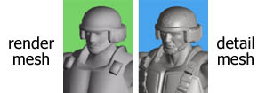
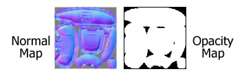
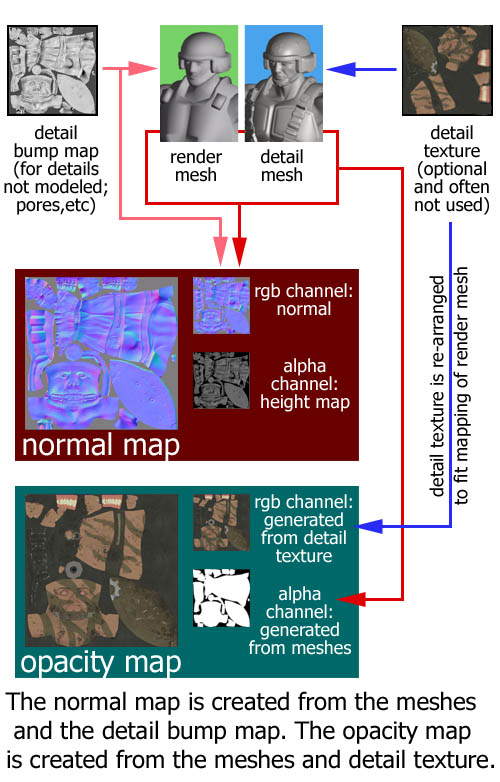

UDN
Search public documentation:
CreatingModelsCH
English Translation
日本語訳
한국어
Interested in the Unreal Engine?
Visit the Unreal Technology site.
Looking for jobs and company info?
Check out the Epic games site.
Questions about support via UDN?
Contact the UDN Staff
日本語訳
한국어
Interested in the Unreal Engine?
Visit the Unreal Technology site.
Looking for jobs and company info?
Check out the Epic games site.
Questions about support via UDN?
Contact the UDN Staff
创建模型
概述
开发工具
开发资源
模型
对于您在游戏中看到的每个模型，您需要创建两个模型；一个是高模，一个是低模。这两个模型将被用于生成一对贴图，查看下述内容了解更多详细信息。- Render Mesh（渲染网格物体）： 这是您将实时使用的低模。
- Detail Mesh（细分网格物体）： 这是您仅为创建法线贴图而使用的高模。

贴图
在虚幻引擎 3 中使用三组主要贴图： 用户创建在材质中使用的贴图，预生成在材质中使用的贴图，以及用户创建将会在预生成的贴图中使用的贴图。用户创建的用于材质的贴图
- Diffuse（漫反射）： 这些包括您的模型中需要的绝大部分颜色数据。
- Specular（高光）： 这些贴图可以表明模型反射部分的效果。通常这是一个漫反射贴图的调整版本，而且有时漫反射贴图本身可以作为高光贴图使用。
- Emissive（自发光）： 如果您的模型中有发光/自发光区域，那么将该信息存储在这些贴图中。

预生成的贴图
这些贴图都是通过 SHTools 插件创建的；不过也可以使用较新版本的 3D Studio Max 创建。它们由渲染网格物体、细分网格物体和用户创建用于材质的贴图生成而来（如下所示）。- Normal Map（法线贴图）： 此贴图通过添加边缘强光及阴影，极大地增加了模型的真实感。
- Height Map（高度贴图）： 在创建法线贴图的时候会生成此贴图，它存储在法线贴图的 alpha 通道中。它还可以被用于凹凸偏移量贴图（参见 ParallaxTest 贴图），但是在大多数情况下最好使用 DXT1 压缩法线贴图，而放弃在 alpha 通道中的高度贴图。
- Opacity Map（不透明度贴图）： 此单通道贴图只会表明材质的不透明等级。

用户创建用于预生成贴图中的贴图
可以使用这些贴图生成法线贴图和不透明度贴图（参见上文）。- Detail Bump Map（细分凹凸贴图）： 在使用 SHTools 前见将该贴图应用于 Render Mesh（渲染网格物体）。它提供了 Detail Mesh（细分网格物体）中所缺乏的更加细微的细节刻画效果，并将会应用于法线贴图。例如，可能会将细孔或者疤痕置于 Detail Bump Map（细分凹凸贴图）内。*注意：* 该贴图的名称具有误导性，它应用于 Render Mesh（渲染网格物体），而 不是 Detail Mesh（细分网格物体）。可以有选择地使用该贴图；法线贴图将在没有改贴图的情况下生成。
- Detail Texture（细分贴图）： 该贴图应用于 Detail Mesh（细分网格物体），并在 Opacity Map（不透明贴图）生成的时候考虑使用它。不需要创建 Detail Texture（细分贴图），如果细分贴图没有应用于 Detail Mesh（细分网格物体），将生成 Opacity Map（不透明度贴图）。
游戏中资源列表
为清晰明了，您最终的模型将需要下面这个美术资源的列表。（括号内列出了可选状态）- Render Mesh（渲染网格物体）
- Diffuse Map（漫反射贴图）
- Specular Map（高光贴图）（可选）
- Emissive Map（自发光贴图）（可选）
- Normal Map（法线贴图）
- Height Map（高度贴图）（在 alpha 通道中，可选性极强）
- Opacity Map（不透明度贴图）
流程图
